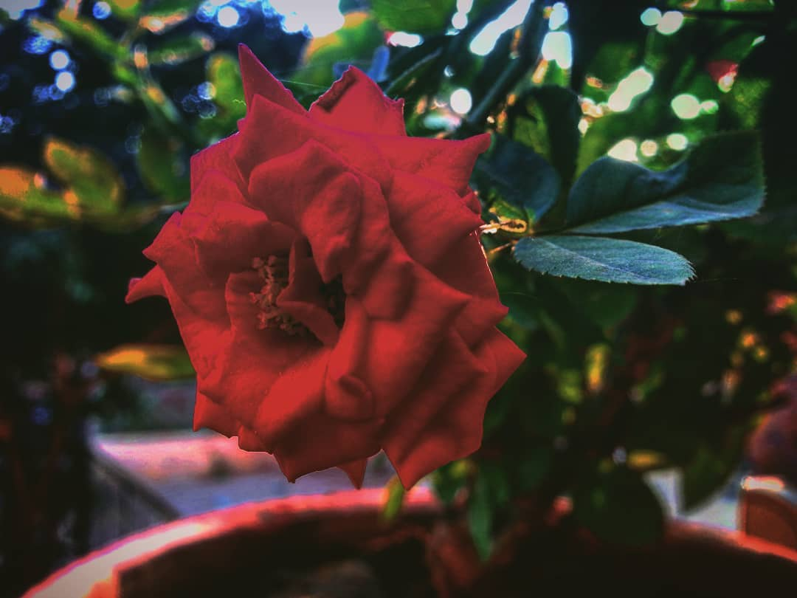
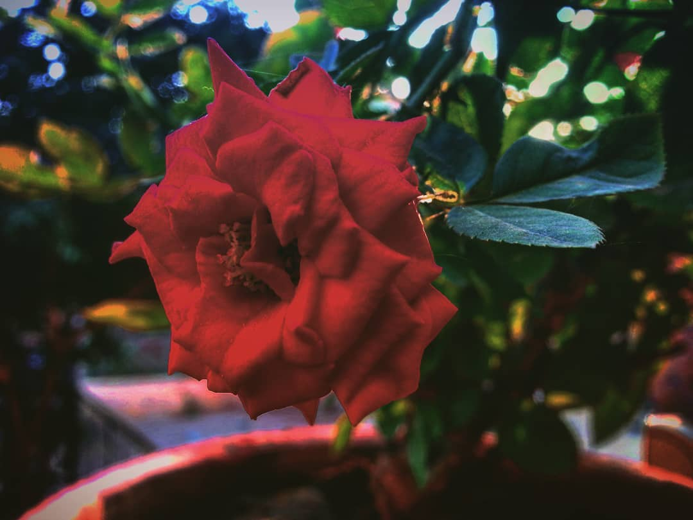

It,s easier to go down the hill
than to go on up
But the view comes from the top
Whether it is Diwali, Christmas or just any other random event.
Lanterns always brightens up your path!
I want to be the pebble in the pond
that creates the ripple of Change
My life is part Humor
partRoses, part Thorns.